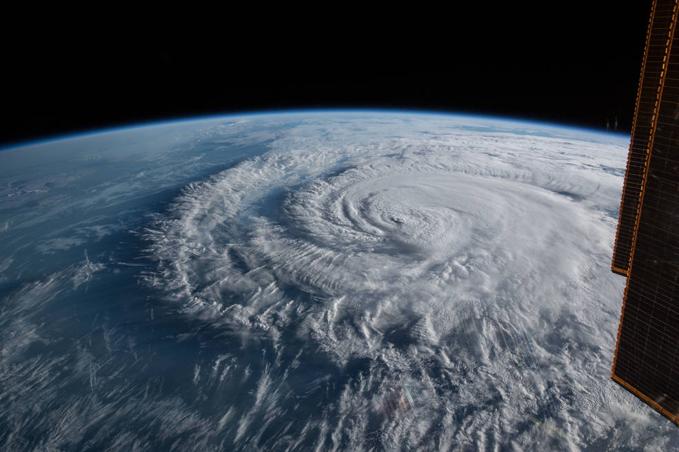

Huracanes
¿Sabías qué?
La palabra Huracán es de origen maya y significa “una pierna”, y hace referencia a uno de los dioses creadores del mundo: el dios del fuego, del viento y de las tormentas. También se le conoce como corazón del cielo.
El huracán Florence se muestra desde la Estación Espacial Internacional como una tormenta de categoría 1 cuando tocaba tierra cerca de Wrightsville Beach, Carolina del Norte, el 14 de septiembre de 2018.
Fuente: NASA.
Un huracán es un fenómeno natural que se forma en los océanos, es ahí en donde se “alimenta” de vapor de agua y calor, busca aguas oceánicas con temperaturas por arriba de los 25 °C.
Los huracanes se clasifican en intensidad según los daños que generan a su paso por tierra debido a la intensidad de sus vientos, así existen 5 categorías.
Los huracanes tienen nombres de personas y están bautizados desde antes de que se formen, así la organización Meteorológica Mundial, tiene una lista de nombres para las tormentas tropicales y huracanes de cada año, los nombres se asginan de siguiendo el orden del alfabeto, usando de la letra A la W, las letras U, Q, X, Y, Z se excluyen ya que no son de uso común en otros países.
El huracán mas antiguo del que se tiene resgistro en México, se llama Janet y tocó tierra en el año de 1955, dejando a su paso más de 712 personas fallecidas, y gran daño a las viviendas, por lo que también se le considera uno de los más catastróficos.